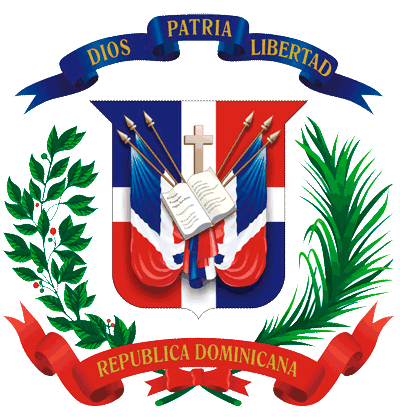

<nav class="navbar navbar-default site-header">
  <div class="container-fluid">
    <!-- Brand and toggle get grouped for better mobile display -->
    <div class="logo">
      
    </div>
    <div class="navbar-header">
      <h3>Elige Tu Presidente 2016!</h3>
      <button type="button" class="navbar-toggle collapsed" data-toggle="collapse" data-target="#bs-example-navbar-collapse-1" aria-expanded="false">
        <span class="sr-only">Toggle navigation</span>
        <span class="icon-bar"></span>
        <span class="icon-bar"></span>
        <span class="icon-bar"></span>
      </button>
    </div>

    <!-- Collect the nav links, forms, and other content for toggling -->
    <div class="collapse navbar-collapse" id="bs-example-navbar-collapse-1">
      <ul class="nav navbar-nav navbar-right">
        <li><a href="#">About</a></li>
        <li><a href="#">Votos</a></li>
        <li><a href="#">Candidatos</a></li>
        <li><a href="#">#eligetupresidente2016</a></li>
        <li><a href="#">Encuesta</a></li>
        <li><a href="#">Contacto</a></li>
      </ul>
    </div><!-- /.navbar-collapse -->
  </div><!-- /.container-fluid -->
</nav>
